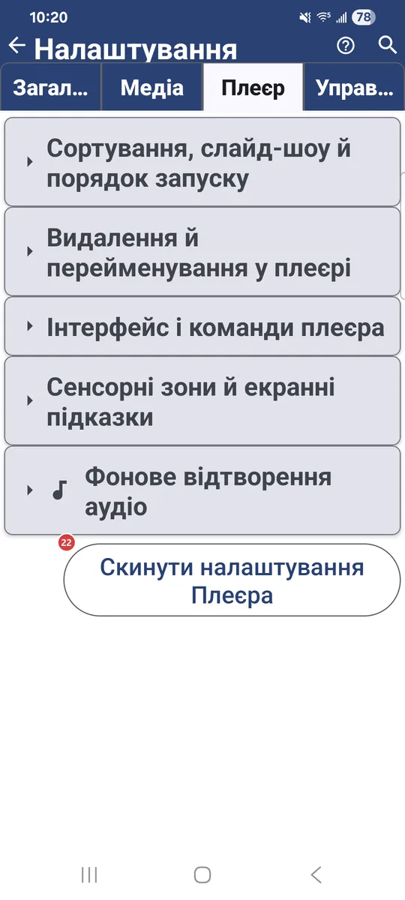
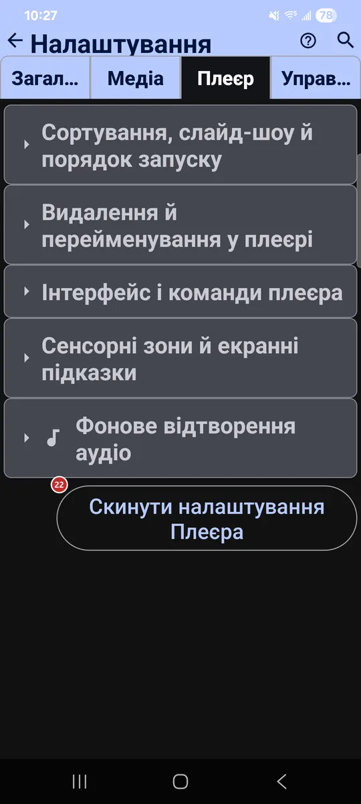

Налаштування: Плеєр
Для чого цей екран
На вкладці «Плеєр» зібрано налаштування перегляду й відтворення файлів: порядок за замовчуванням, час слайдшоу, що можна робити з файлом під час перегляду, керування плеєром, сенсорні зони та фонове аудіо.


Порядок дій
Єдиного порядку тут немає - кожен параметр працює сам по собі. Нижче їх згруповано за тими самими заголовками розділів, що й на вкладці.
Елементи
Сортування, слайд-шоу й порядок запуску
1Режим сортування за замовчуваннямЗадає порядок файлів за замовчуванням.
Можна вибрати ручний порядок або сортування за іменем, датою, розміром і типом - за зростанням чи за спаданням.
2Слайдшоу (с)Задає, скільки секунд кожне зображення лишається на екрані в слайдшоу.
Від 1 до 3600 секунд, за замовчуванням 10. Відео грає до кінця або підкоряється цьому таймеру - це залежить від наступного параметра.
3Відтворювати відео/аудіо в слайдшоу до кінцяДає відео й аудіо в слайдшоу дограти до кінця.
Без цього параметра до наступного файлу переходять за інтервалом слайдшоу.
Видалення й перейменування у плеєрі
4Дозволити перейменуванняДозволяє перейменовувати файл просто в плеєрі.
Зручно під час розбирання файлів: перейменуйте поточний файл, не повертаючись у браузер файлів.
5Дозволити видаленняДозволяє видаляти файл просто в плеєрі.
Зручно під час розбирання файлів: видаліть поточний файл, не повертаючись у браузер файлів.
- Скасування
- На локальних ресурсах видалений файл чекає в прихованій папці .trash, і його можна повернути кнопкою «Скасувати», поки ресурс не закрито. На деяких мережевих і хмарних ресурсах видалення незворотне.
6Підтверджувати видаленняПитає підтвердження перед видаленням файлу в плеєрі.
Вимкніть, якщо віддаєте перевагу видаленню одним дотиком.
Інтерфейс і команди плеєра
7Приховувати елементи ОС у повноекранному режиміХоває рядок стану й навігацію в повноекранному режимі.
Зображенню дістається весь екран.
8Повертати екран плеєра разом із ОСПовертає екран плеєра услід за автоповоротом системи.
Працює незалежно від загального налаштування застосунку, тож решта застосунку лишається як була.
9Показувати панель команд за замовчуваннямАвтоматично відкриває панель команд під час входу в плеєр.
Панель дає швидкий доступ до копіювання, переміщення, видалення й інших дій із файлом.
10Автоприховування панелі плеєра (сек)Задає, через скільки секунд панель плеєра ховається.
Менше значення швидше звільняє екран, більше - довше залишає кнопки під рукою.
11Показувати кнопку «Чорний екран»Додає кнопку, що гасить екран, поки відтворення триває.
Кнопка міститься на панелі плеєра: екран темніє, а аудіо чи відео грає далі.
12Увімкнути картинку в картинціДодає до плеєра кнопку «картинка в картинці».
Плеєр також сам переходить у режим «картинка в картинці», коли ви натискаєте «Додому» (Android 12 і новіші).
13Режим великі кнопкиЗбільшує кнопки плеєра й розтягує їх на всю ширину.
Режим пасує автомагнітолам. Угорі вміщується від 5 до 9 кнопок, залежно від ширини, решта йде в меню з трьома крапками. В альбомній орієнтації висока нижня панель може зменшити область відтворення.
14Компактні кнопки плеєраЗменшує нижні кнопки керування в плеєрі.
Корисно на невеликих екранах або коли хочеться менш помітного інтерфейсу.
Сенсорні зони й екранні підказки
15Вимкнути відстеження 9 зонПеремикає плеєр із 9 сенсорних зон на 3.
Коли сітку з 9 зон вимкнено, у плеєрі три зони: попередній, масштаб і наступний. Натисніть лівий край, щоб відкрити панель команд із діями над файлом.
16Показувати підказку сенсорних зон при першому запускуПоказує підказку про сенсорні зони під час першого відкривання плеєра.
Схема пояснює дев’ять зон: назад, копіювати, перейменувати, попередній, перемістити, наступний, панель команд, видалити та слайдшоу.
17Завжди показувати сітку сенсорних зонТримає поверх медіа напівпрозору сітку сенсорних зон.
Вона видна в повноекранному режимі й допомагає запам’ятати, яка зона що робить.
18Показати підказку наступного разуПокаже підказку про сенсорні зони під час наступного відкривання плеєра.
Натисніть, щоб побачити схему ще раз.
Фонове відтворення аудіо
19Фонове відтворенняНе перериває звук, коли застосунок згорнуто.
Музика продовжує грати у фоні. Якщо сповіщення заблоковано, тут з’являється кнопка для керування цим дозволом.
20При виході з плеєра та трансляційОбирає, що станеться з фоновим звуком, коли ви виходите з плеєра чи трансляцій.
За замовчуванням застосунок питає щоразу. Можна також завжди зупиняти звук або завжди продовжувати відтворення. Вибір з’являється, коли ввімкнено фонове відтворення.
21Показувати панель плеєраПоказує міні-плеєр, поки ви переглядаєте зображення й інші файли.
Панель дає змогу керувати треком, що грає, і повертає до повного аудіоплеєра.
Скидання
22Скинути налаштування ПлеєраПовертає до значень за замовчуванням лише цю вкладку.
Налаштування на інших вкладках зберігаються. Перед скиданням застосунок просить підтвердити дію.